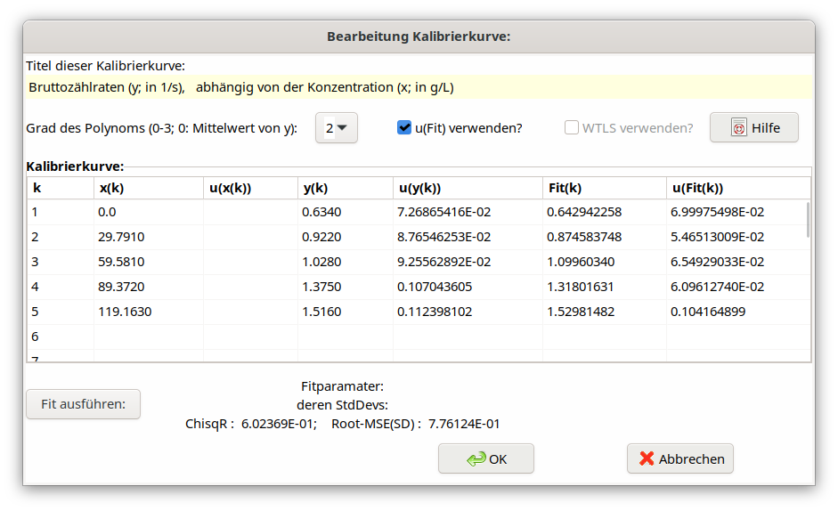
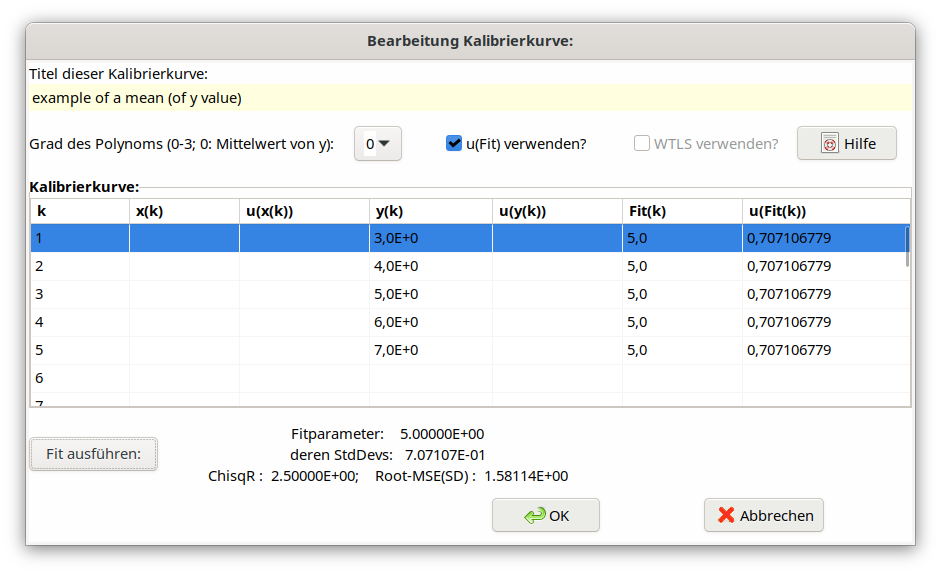

4.4. Verwendung einer Kalibrierkurve¶
Es bestand der Bedarf, den Wert einer bestimmten für die Auswertung benötigten Eingangsgröße (z.B. die Nachweiswahrscheinlichkeit) nicht direkt einzugeben, sondern in Abhängigkeit von einer weiteren Eingangsgröße (z.B. Massenbelegungsdichte, oder ein Externstandard-Kanalverhältnis) aus einer „Kalibrierkurve abzulesen”, d. h. in einer entsprechend als Polynom aufbereiteten Kurvendarstellung zu interpolieren.
Dazu wurde eine neue Funktion KALFIT geschaffen, die mittels eines Dialogs die Eingabe der Messwerte x (unabhängige Größe) und y (abhängige Größe) der Kalibrierkurve (max. 40 Werte) erlaubt. x und y repräsentieren (zusammen mit ihren Standardunsicherheiten) die Werte der abhängigen und unabhängigen Messgröße. Es wird ein Polynom bis maximal 3. Grades (maximal 4 anzupassende Koeffizienten) als Kurvenmodell zugrunde gelegt. Die Polynomkoeffizienten werden mit gewichteter oder ungewichteter (multi-) linearer Least squares-Anpassung berechnet.
Nicht besetzte Spalten der Unsicherheiten der x- oder y-Werte werden intern auf 1 gesetzt. Werden die Standardabweichungen der Werte jeweils gleich 1 gesetzt, entspricht dies einer ungewichteten LSQ-Anpassung.
Wählt man als Polynom-Grad 0, wird aus der Spalte der y-Werte formal ein gewichteter Mittelwert (Unsicherheiten angegeben) oder ein arithmetischer Mittelwert berechnet; dessen Standard-Unsicherheit bezieht sich auf den Mittelwert, ist also durch \(\sqrt{n}\) geteilt.
Aktivierung des Kalibrierkurven-Tools:
In diesem Beispiel werden Wert und Unsicherheit der Nachweiswahrscheinlichkeit eps als Funktion des Externstandard-Kanalverhältnisses eskv durch Interpolation des damit verbundenen (angepassten) Polynoms berechnet.
Der zweite Parameter (hier eskv) stellt das Symbol für denjenigen Wert der unabhängigen Größe X dar, aus dem der Wert und die Standardunsicherheit der abhängigen Größe Y (hier: eps) berechnet werden soll.
Der erste Parameter der Funktion (hier: 1) liefert die Information, wie der Wert der Größe, die auf der linken Seite der Gl. (4.4.1) mit KALFIT steht, berechnet wird. Der Wert 1 bedeutet, dass der Wert von Y so aus dem Polynom der Kurve berechnet wird („abgelesen”), wie oben gezeigt. Beim Wert 2 hingegen wird der Wert der Größe Y aus der Umkehrung der Polynomgleichung berechnet. Ein Beispiel für diesen zweiten Fall zeigt das UR-Projekt Beispiel_8_mit_KALFIT_DE.txp, indem die obige Gl. (4.4.1) durch die folgende Gleichung ersetzt wird:
Sie bedeutet, dass Rnet Zählraten bezeichnet, die in einem ersten Schritt als Polynomfunktion in Abhängigkeit von bekannten Konzentrationswerten x kalibriert werden: Rnet = Polynomial(x). Im zweiten Schritt wird eine Zählrate Rnetx einer anderen Probe gemessen und daraus die zugehörige Konzentration Cx bestimmt. Bei einem Polynom 1. Grades würde man die Konzentration Cx zu (Rnetx-a1)/a2 berechnen; für Polynome höheren Grades wird für die Umkehrung ein numerisches Bisektionsverfahren verwendet. Im genannten UR-Projekt bezieht sich die Konzentration auf diejenige von Kalium in g/L.
Der KALFIT-Aufruf hat die Bearbeitung eines neuen Dialogs zur Folge (s. auch neuer Punkt im Hauptmenü), in dem die x- und y-Werte einer Kalibrierkurve (inkl. ihrer Standardunsicherheiten) eingegeben werden und die Anpassung gerechnet wird.
Die Standardunsicherheit des gesuchten Y-Werts (eps) wird durch numerische Unsicherheitsfortpflanzung mit den angepassten Parametern \(a_{i}\) und ihrer Kovarianzmatrix und mit der Unsicherheit des vorgegeben x-Werts \(x_{0}\) (eskv) berechnet.

Abb. 4.4.1 KALFIT example¶
Obwohl das so wie oben definierte eps formal als eine „abhängige Größe” zu betrachten ist, wird es programmintern (z.B. Unsicherheits-Budget) wie eine unabhängige Größe behandelt.
Derzeit wird davon ausgegangen, dass KALFIT nur für eine einzige Größe in einem UR-Projekt verwendet wird.
Die Unsicherheiten der x-Werte werden derzeit nicht berücksichtigt.
Ein Beispiel für eine Mittelwertberechnung (Polynomgrad gleich null), die zu mittelnden Werte stehen in der Spalte für y(i):

Abb. 4.4.2 Example mean value from KALFIT¶